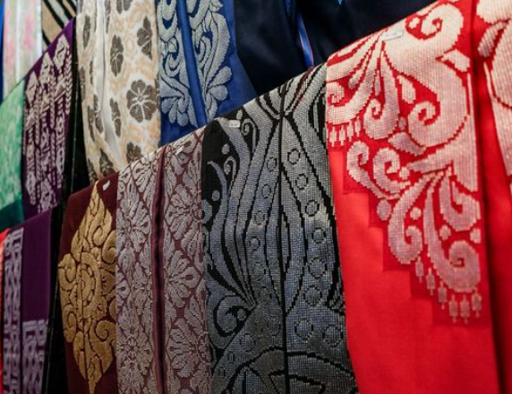

Proses Karawo membutuhkan ketelitian tinggi karena setiap motif dibuat secara manual dan tidak dapat dilakukan oleh mesin.


Cerita Pengrajin Karawo
Di Gorontalo, kerajinan Karawo tidak hanya dikenal sebagai produk budaya, tetapi juga menjadi bagian dari kehidupan sehari-hari para pengrajinnya. Sebagian besar pengerjaan dilakukan secara manual dari rumah dengan ketelitian dan kesabaran yang tinggi.
Sebagian besar pengrajin Karawo adalah perempuan yang mengerjakan sulaman dari rumah. Aktivitas ini tidak hanya menjadi sumber penghasilan, tetapi juga bentuk pelestarian budaya daerah. Dalam praktiknya, pembuatan satu produk Karawo dapat memakan waktu berhari-hari hingga berminggu-minggu, tergantung pada tingkat kerumitan motif yang dikerjakan.
Menurut laporan dari ANTARA News, para pengrajin Karawo di Gorontalo masih menghadapi berbagai tantangan, seperti keterbatasan pemasaran dan nilai ekonomi yang belum sepenuhnya sebanding dengan tingkat kesulitan proses pembuatannya. Meskipun demikian, mereka tetap mempertahankan tradisi ini sebagai bagian dari identitas budaya yang harus dijaga dan diwariskan ke generasi berikutnya.
Pemerintah daerah bersama berbagai pihak juga terus berupaya mendukung keberlangsungan kerajinan Karawo, baik melalui pelatihan, promosi, maupun pembentukan wadah seperti koperasi pengrajin. Upaya ini dilakukan agar Karawo tidak hanya bertahan sebagai warisan budaya, tetapi juga mampu berkembang dan bersaing di pasar yang lebih luas.
Karawo kini tidak hanya digunakan sebagai pakaian adat, tetapi juga telah dikembangkan menjadi berbagai produk modern seperti aksesori dan suvenir. Hal ini menunjukkan bahwa Karawo memiliki potensi besar untuk terus berkembang tanpa kehilangan nilai tradisionalnya.
Bagi para pengrajin, Karawo bukan sekadar pekerjaan, tetapi juga bentuk kebanggaan dalam menjaga warisan budaya yang telah ada sejak lama.
Sumber: https://gorontalo.antaranews.com https://antaranews.com